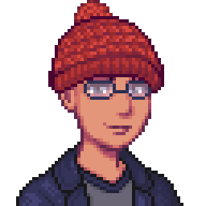
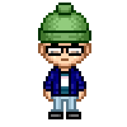
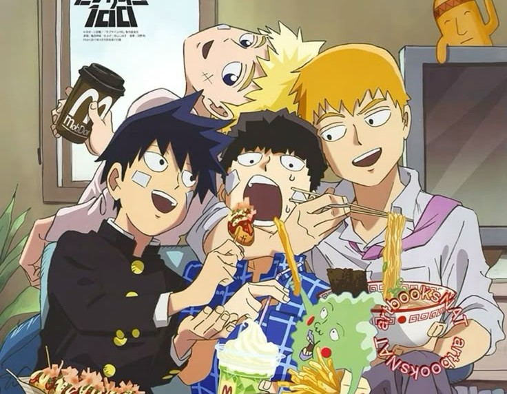
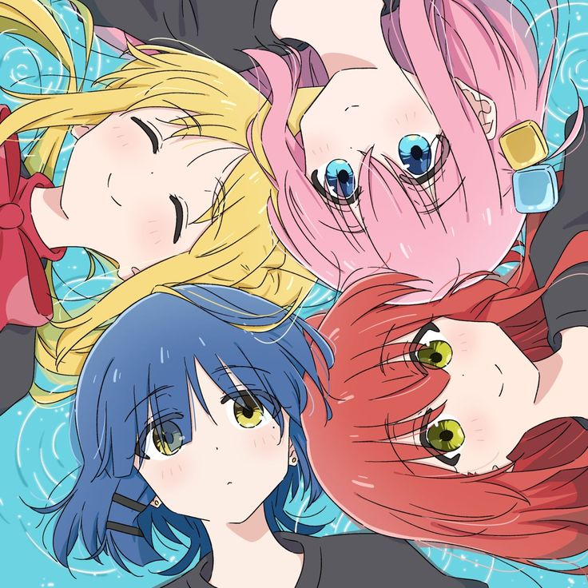
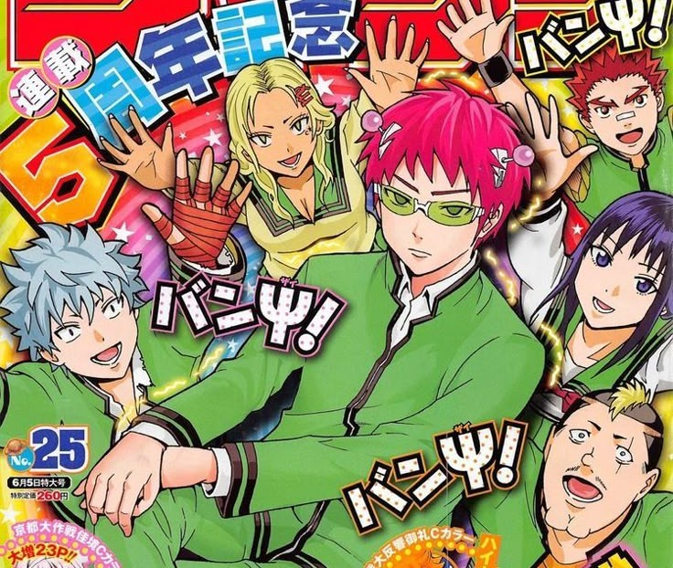
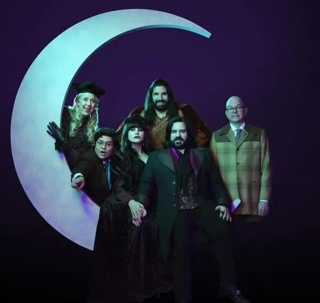
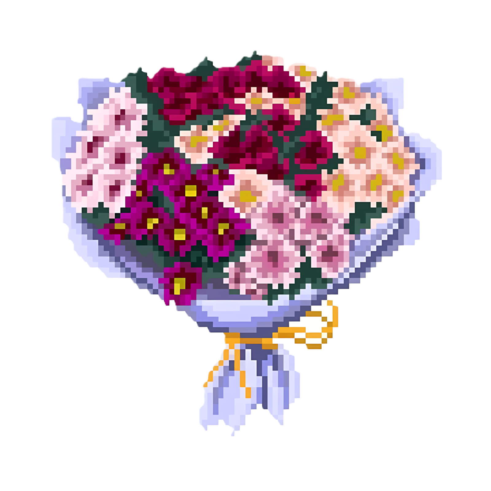

loading...
loading...
Dear Louie, Heya! I hope you’re doing well wherever you are now. It’s been a while since we last spoke, which also, if I remember correctly, was the last time I saw you. Time flies so fast when you’re on a break, but even when the ship stops, the waves around it never still, and I am now slowly forgetting the faces of the waves I’ve encountered in the past. Everything is slowly becoming a blur, or already has been completely, but what you’ve given me, every single thing in that envelope, flushed a wave of memory back to my almost-mush brain, and stayed in the crevice that wants to remember and never wishes to forget. I never in a thousand years expected that you would leave me something. I thought the talk that we had outside our lounge was the end of it. If that was our farewell, it would have been the most generous one I’ve ever gotten since I stepped foot in college. Most acquaintanceships in Silliman just stop, no more pennies to spare to feed the slot machine, so you can only be afforded an abrupt end. So what we shared that day was one for the books. My mind was completely empty when I went to see Ma’am Marlin a few weeks after the end of the term. I don’t even know why I stopped at the lounge, but I did anyway. And when she told me you left something and handed me the envelope, it took every ounce of will in my body not to pry it open there and then. I guess that was proof that even though we shared a generous farewell, it was not enough. I opened it that afternoon, and I hadn’t even gotten through your letter yet, but I was already shedding a few tears (for the benefit of my self-imposed, failure of a stoic image, I must say I may have, or MAY NOT have, shed a few tears). The Elmo quote was the culprit; he is always at the scene of the crime. To tell you the truth, although I deem myself a very introspective person (fueled by undiagnosed anxiety and OCD), I have mostly been critical about the things that I have done wrong and not those that I’ve done right. I have not been even remotely conscious of all the possible good things that I have done and how they may have affected people. So the Elmo quote really struck a nerve and made me realize that I’ve been beating myself up, almost to a pulp, because I was not able to recognize that even the things I did, the ones I didn’t pay much attention to, have made an impact on other people. An impact that would prompt someone to leave me an envelope that would make me a sobbing mess on my bed in the scorching heat of the Philippine summer. It reminded me of something I read when I was younger, that people are so afraid of the idea of going back in time because even the smallest thing can change the present, but not everyone in the present is willing to do tiny good things to change the future. I depleted all the possible ways I could get to you. I couldn’t send you anything back as I don’t know where you are, and I absolutely do not wish to doxx anyone, and well, I also couldn’t give you anything in person, so I resorted to what I know. I never thought I’d ever code again after leaving I.T., but I guess I was wrong. I hope you don’t think I’m doing this because you gave me something, or that I’m forced to reciprocate. I’m doing this because I want to, and because there was also a time when I daydreamed about cheesecakes and getting drunk, but then I realized the real thing is just better than the immersive thought, and maybe I should take the step to go out to help my sweet tooth and get face-flat wasted.
Hey, again. I don’t want to talk your ear off (if that’s even possible in this medium), so I’ll try to keep it less flowery (if I can). I’m not sure which interaction came first: the one where we played cards with Jecinth at the lounge, where she pretty much interrogated us, or the one at the museum where I told you that you looked cool and that I had always wanted to interact with you. If my memory serves me right, it’s the former. But either way, I cherish both of those moments the same. For one, at the time, I was still gauging my environment. I had previously concluded that the reason why I never conjured a long and lasting friendship in my previous program was due to me being a bit unapproachable (as my now-friends say). I knew I always somehow had that air around me, I cannot help it, I don’t like a lot of people, but I liked you, and I wanted to know more about you, and I truly enjoyed the moments that I shared with you. And I wish I could get that through your noggin: that I walked a little lighter after we played Dungeon Mayhem because I was able to spend my time with someone I genuinely enjoyed hanging out with. At the back of my mind, I always had moments where I wanted to ask you if we could play again, but I was too afraid to ask. Just like you thought, I also believed that you wouldn’t want to waste your time doing the same thing. You were always the first person in and out of class; I saw that you valued your time well, and I didn’t want to be the reason you wasted it. So, I didn’t ask, and just wished that you would. I regret putting that responsibility on you. As I write this, I ponder the possibilities. What if I had just asked for another game, regardless of your response? At least I would have put in the effort to show you that I, too, was interested. But all I can do now is look back. Every time I dropped by the lounge while you were there, I wanted to ask you how you were, but oftentimes you’d be on your phone, or have your headset on, or maybe you just looked like you didn’t want to be disturbed, so I never tried. I never want to be an inconvenience. But know that in the moments where we actually dropped everything to speak to one another, I cherished it, and by your words, I saw it as an act of grace. You might not think the same, but I will say it: I think you and I are alike. Although you might see me around, rubbing shoulders and hanging out with people from the department, I only actually see one as my friend, someone I talk to outside of school, someone I can confide in. The rest are just confetti. I also only have one person, whom I have known since elementary school, who I can say is my best friend. The rest are just people I know. Once upon a time, I wanted more, and when I saw that glimmering light at the end of the tunnel pointing me toward more people, I took the chance to be amiable. But then again, you realize in the long run that more is not always great, and I realized what I truly wanted was just stability. It was in that search for stability that I started seeing parts of me in you. I always wanted to be the first one in and out (although people hold me back), I barely talk unless spoken to, and I have a hard time thinking of things to say, but when I do find something interesting, I can barely stop talking. It’s hard for me to tell when I’m friends with someone unless they say it to my face, and sometimes, well, most of the time, I just want to blend in and not stand out from the crowd. And I guess that’s why I liked you. We were more alike than we were different. I hope that in your next voyage, you’ll take the steps we never took, the words we never spoke, the questions we never asked, and just stop merely pondering the possibilities but actively acting on them. I have tried ice cream and I’ve been to a punk party, and although I only enjoyed one of those (hint: it melts), I would have never known the feeling had I not acted on it. So take that step, and I hope it leads you where you want to be. The first time I tried a cheesecake, it was Basque-flavored, and I made it a big deal. Instead of just eating the slice at the shop, I had it wrapped, and I walked from the store to the Boulevard to eat it in front of the waves. And I will tell you this: it was better than anything I could have ever imagined. I can’t say the same about being drunk, what goes down goes back up, it’s totally not as good as a cheesecake, but what I enjoyed the most was the company. The stories, the laughs, the shared light slaps accompanied by out-of-breath cackles, the songs sung using a beer bottle as a mic, the dances, and the jokes that we carry on until the next day. Enjoying a good slice of cake with the company of the ocean waves is fun, and nursing a bottle of alcohol over the company of red-faced, tipsy friends or acquaintances is also fun. I hope you can find the right spot to enjoy your ice cream, and I hope you can find the right people to mosh with at a punk party. I believe you will, because anyone would be so lucky to spend a moment of their fleeting time on earth with you. I wish I had told you from the very beginning that we could be friends, and that I wanted to be friends with you, and that I wanted you to think the same. Maybe we’d have a better ending. Thank you for choosing to spend your time with me, and thank you for all the gifts that you’ve given me. I wish you the best on your next journey, but please, don’t be a stranger!


Tried my best to make it look like you, but my skills are only limited :/
Just a list of shows you might like! All of these have the same overarching theme which are found family and friendship. When I feel a bit down or when I miss some company, these are the shows I turn to for comfort. I hope you find some comfort in them too!

Mob Psycho 100
Follows a story of a young shy boy with psychic powers as he overcomes many adversities in his life.
This show explores themes of identity and self-acceptance that made me want to change things about myself too. It's a chill and engaging watch! An absolute fave.

Bocchi the Rock!
This one is a story of a girl with social anxiety who joins a school band and learns to overcome her fears.
It's a really funny watch, and some of the scenes made me feel like I was looking through a mirror. Also one of my all-time favorites!

The Disastrous Life of Saiki K.
You've probably already seen clips of this show around social media, which is how I discovered it.
It's a hilarious show that also has a psychic lead. Each episode has a different assortment of plots so it's always a surprise!

What We Do in the Shadows
This is the only show in the list that is not an anime or cartoon. This is also one of my all-time faves and I always rewatch it every year.
It's a mockumentary-style comedy show that follows a group of vampire roommates and their familiar. It pretty much answers the question, "What if vampires were stupid?" lol.

Since I can't give you a real one.